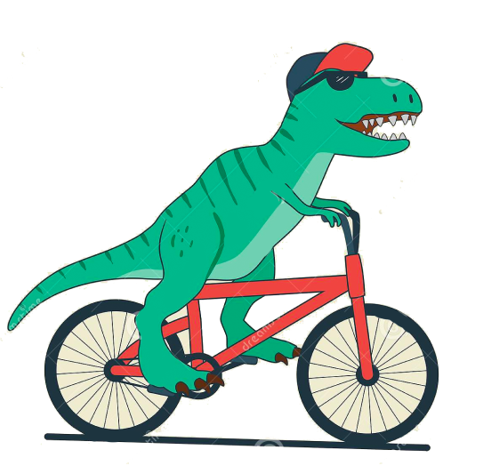
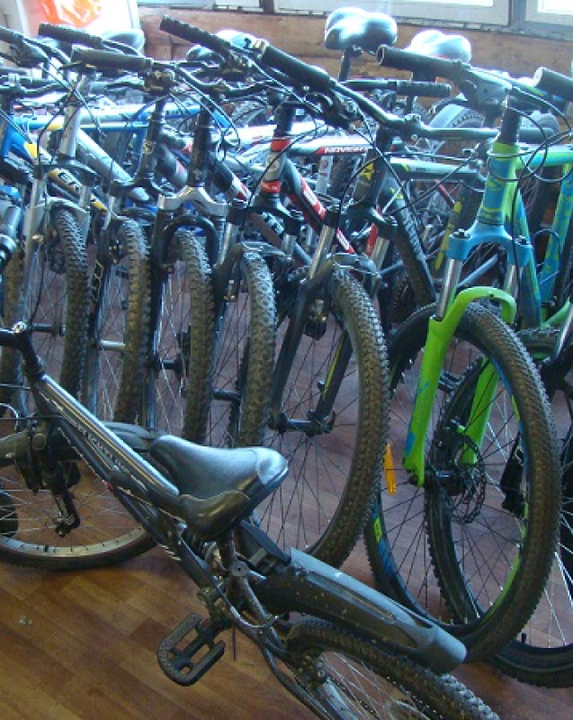

Веломастерская “Велозар”
Мы, мастера веломастерской «Велозар», как раз те самые счастливые люди,
которые смогли превратить свое увлечение и хобби в профессию.
Мы сами любим кататься и хотим чтобы Ваш двухколесный друг приносил
Вам только радость и удовольствие от езды.

Что мы предлагаем
В нашей мастерской можно выполнить комплексное
техническое обслуживание велосипеда, ремонт и настройку всех его узлов,
шиномонтажные работы. Вовремя проведенное ТО велосипеда помогает избежать
многих проблем и дорогого ремонта. Все работы выполняем качественно и с душой.
Приехав к нам однажды, многие наши клиенты становятся постоянными,
а часть из них даже друзьями.
А также в нашей мастерской можно отремонтировать электросамокат
и электровелосипед.

Прокат велосипедов
У нас вы можете взять на прокат хорошо обслуженные и настроенные велосипеды.
Как раз мы находимся в прекрасном парке!